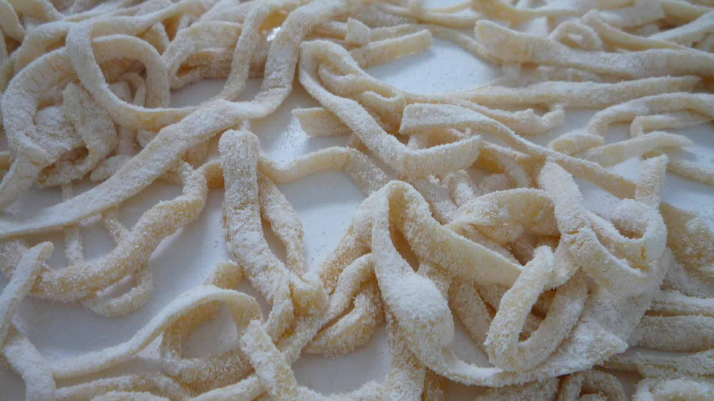

Zurück zur Übersicht
Bandnudeln auf slowenische Art
Kräftig gelbe Eiernudeln mit Kürbiskernöl, von Hand geschnitten und in Butter geschwenkt.
- Zeit
- 25 Min.
- Schwierigkeit
- mittel
- Kategorie
- Teige & Grundrezepte
- Ernährung
- vegetarisch
Zutaten
Portionen
- 400 gMehl Type 405
- 1großes Ei
- 5Eigelb
- 2 ELKalt gepresstes Kürbiskernöl
- 1 TLSalz
- Ein großes Stück Butter zum Schwenken
Zubereitung
- Das Mehl auf die Arbeitsfläche geben und eine Mulde hineindrücken. Ei, Eigelbe, Öl und Salz hineingeben und mit einer Gabel verrühren, bis sich der Teig mit den Händen kneten lässt. Klebt er noch, etwas Mehl zugeben. Man kann auch alles in die Knetmaschine geben.
- Den Teig 10 Minuten kneten, bis er glänzt. In Folie gewickelt eine halbe Stunde bei Zimmertemperatur ruhen lassen.
- Mit wenig Mehl 1–2 mm dünn ausrollen, ohne dass er klebt, und in etwa 1 cm breite Streifen schneiden.
- In kochendem Salzwasser etwa 5 Minuten bissfest kochen.
- In einer großen Pfanne ein Stück Butter schmelzen und die Nudeln darin schwenken, bei Bedarf noch etwas salzen. Nicht kalt abschrecken und sofort servieren.
Hinweis: Die 25 Minuten gelten ohne die 30 Minuten Ruhezeit. Die Bandnudeln passen zu Gulasch, Braten und Ähnlichem.